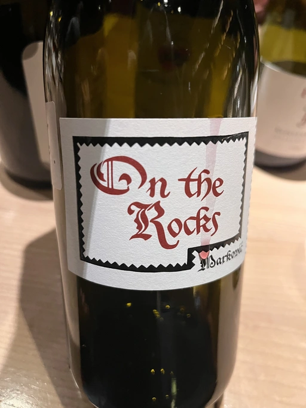

To Each Their Own Vol. 1
Most of our wine-tasting events follow the same idea. Once I have a topic (usually centred around a few bottles), I find participants and finish building the final line-up adapted to signed-up participants. And then, during the event, I serve all bottles blind. On the one hand, it gives a chance to guess the grapes, region and wine. On the other hand, it increases the subjectivity of the tasting experience. I try to avoid the loud names and the weight of the price from interfering with the participant’s opinion. So we taste and share our ratings and guesses. And only then do I reveal the bottle, and we continue to the next one. Easy to follow and interesting for different levels.
This form of participation is quite passive (with no negative connotation). Sometimes I want to spice things up by engaging my fellow convives even more by delegating the selection of wine. To Each Their Own Vol. 1 is an attempt to revive the format we used a lot previously. The idea is simple - we agree on the topic (usually grapes) and budget. And then everyone brings a bottle. And then we shuffle them and serve them blindly, so you even have to guess your own bottle. This format brings so much joy!
For this event, our topic was the Pinot family. It means that the wine must be made of the following grapes (mono or blend): Pinot Noir (with all its synonyms like Pinot Nero, Spätburgunder, Blauburgunder), Pinot Gris (Pinot Grigio, Grauburgunder), Pinot Blanc (Weissburgunder), and Pinot Meunier (Schwarzriesling). So meet the United Colors of Pinot.
- Louis Jadot Savigny-Lés-Beaune La Dominode 1er Cru 2014
- Vinoman Pinot Blanc 2021
- Foradori Fuoripista Pinot Grigio 2021
- Domaine Zind Humbrecht Heimbourg Turckheim Pinot Gris 2018
- Rudolf Fürst Klingenberger Spätburgunder 2019
- Tomislav Marković On the Rocks 2020
- Momento Mori Cardinia Rangers Rosé 2019
| Wine #1 | Wine #2 | Wine #3 | Wine #4 | Wine #5 | Wine #6 | Wine #7 | |
|---|---|---|---|---|---|---|---|
| Daria B | 3.80 | 3.70 | 4.00 | 3.80 | 3.80 | 4.00 | 3.80 |
| Oleksandr R | 3.20 | 3.70 | 4.20 | 3.80 | 3.60 | 3.10 | 3.10 |
| Andrii S | 3.60 | 3.40 | 4.40 | 3.30 | 4.10 | 3.70 | 4.00 |
| Viktoria Zh | 3.90 | 3.50 | 4.40 | 4.10 | 4.50 | 4.00 | 3.90 |
| Dimitry G | 3.20 | 3.00 | 4.20 | 4.00 | 4.00 | 3.70 | 3.20 |
| Elvira K | 3.70 | 3.70 | 4.00 | 3.90 | 3.80 | 3.90 | 4.00 |
| Boris B | 4.00 | 3.50 | 4.00 | 4.00 | 4.00 | 4.10 | 4.00 |
| amean | sdev | favourite | outcast | price | QPR | |
|---|---|---|---|---|---|---|
| Wine #1 | 3.63 | 0.0878 | 0.00 | 0.00 | 1510.00 | 0.9228 |
| Wine #2 | 3.50 | 0.0543 | 0.00 | 4.00 | 600.00 | 1.9386 |
| Wine #3 | 4.17 | 0.0278 | 2.00 | 0.00 | 1402.00 | 2.2233 |
| Wine #4 | 3.84 | 0.0596 | 0.00 | 1.00 | 1576.00 | 1.2052 |
| Wine #5 | 3.97 | 0.0706 | 2.00 | 0.00 | 1793.00 | 1.2823 |
| Wine #6 | 3.79 | 0.0984 | 3.00 | 0.00 | 1590.00 | 1.0987 |
| Wine #7 | 3.71 | 0.1327 | 0.00 | 2.00 | 1358.00 | 1.1599 |
How to read this table:
ameanis arithmetic mean (and not ‘amen’), calculated as sum of all scores divided by count of scores for particular wine. It is more useful thantotal, because on some events some wines are not tasted by all participants.sdevis standard deviation. The bigger this value the more controversial the wine is, meaning that people have different opinions on this one.favouriteis amount of people who marked this wine as favourite of the event.outcastis amount of people who marked this wine as outcast of the event.priceis wine price in UAH.QPRis quality price ratio, calculated in as100 * factorial(rms)/price. The reason behind this totally unprofessional formula is simple. At some point you have to pay more and more to get a little fraction of satisfaction. Factorial used in this formula rewards scores close to the upper bound 120 times more than scores close to the lower bound.
Louis Jadot Savigny-Lés-Beaune La Dominode 1er Cru 2014

- producer: Louis Jadot
- name: Savigny-Lés-Beaune La Dominode 1er Cru
- vintage: 2014
- grapes: Pinot Noir
- appellation: Savigny-les-Beaune AOC
- location: Côte de Beaune, Côte d’Or, Burgundy, France
- alcohol: 13
- sugar: N/A
- price: 1510 UAH
Vinoman Pinot Blanc 2021
- producer: Vinoman
- name: Pinot Blanc
- vintage: 2021
- grapes: Pinot Blanc
- region: Chernihiv Oblast
- location: Ukraine
- alcohol: 11.3
- sugar: N/A
- price: 600 UAH
Foradori Fuoripista Pinot Grigio 2021
- producer: Foradori
- name: Fuoripista Pinot Grigio
- vintage: 2021
- grapes: Pinot Gris
- appellation: IGP Vigneti delle Dolomiti
- location: Trentino-Alto Adige, Italy
- alcohol: 12.5
- sugar: N/A
- price: 1402 UAH
Domaine Zind Humbrecht Heimbourg Turckheim Pinot Gris 2018
- producer: Domaine Zind Humbrecht
- name: Heimbourg Turckheim Pinot Gris
- vintage: 2018
- grapes: Pinot Gris
- appellation: Alsace AOC
- location: Alsace, France
- alcohol: 13
- sugar: 1.7
- price: 1576 UAH
Rudolf Fürst Klingenberger Spätburgunder 2019
- producer: Rudolf Fürst
- name: Klingenberger Spätburgunder
- vintage: 2019
- grapes: Pinot Noir
- appellation: Deutscher Wein
- location: Germany
- alcohol: 13
- sugar: 1
- price: 1793 UAH
Tomislav Marković On the Rocks 2020

- producer: Tomislav Marković
- name: On the Rocks
- vintage: 2020
- grapes: Pinot Noir
- appellation: Landwein Oberrhein
- location: Germany
- alcohol: 12.5
- sugar: 0.2
- price: 1590 UAH
Momento Mori Cardinia Rangers Rosé 2019
- producer: Momento Mori
- name: Cardinia Rangers Rosé
- vintage: 2019
- grapes: Pinot Noir
- region: Gippsland
- location: Victoria, Australia
- alcohol: 12.4
- sugar: 1
- price: 1358 UAH